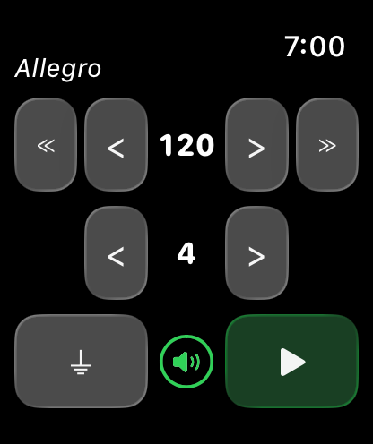
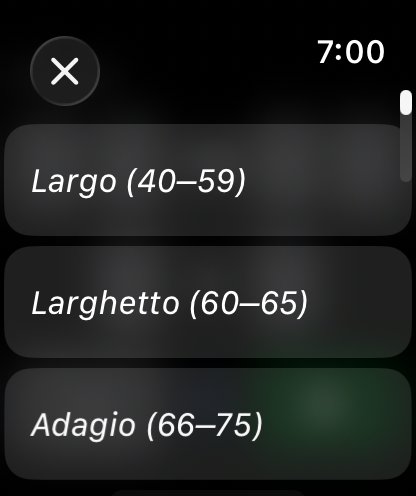

Metronome Watch Special – Support
About the app
Metronome Watch Special is a simple, precise metronome for Apple Watch. Set BPM from 40 to 240, choose from preset tempos (Largo, Andante, Allegro and more), 1–8 beats per measure with automatic first-beat accent, sound and haptic feedback, Digital Crown volume control. Works with wrist down, no phone needed.


How to use
- Adjust BPM with the < > and ≪ ≫ buttons
- Tap the tempo name (e.g. "Allegro") to pick from a preset list
- Adjust beats per measure with the < > buttons on the second row
- Turn haptics on with ⚡︎ (zap) and off with the ⏚ (ground) button
- Use the Digital Crown to adjust volume
- Press the green play button to start, red stop button to reset
Tempo Reference
| Tempo | BPM Range | Feel |
|---|---|---|
| Largo | 40 – 59 | Very slow, broad |
| Larghetto | 60 – 65 | Rather slow |
| Adagio | 66 – 75 | Slow and stately |
| Andante | 76 – 99 | Walking pace |
| Andantino | 100 – 109 | Slightly faster than Andante |
| Moderato | 110 – 119 | Moderate |
| Allegro | 120 – 167 | Fast and bright |
| Presto | 168 – 199 | Very fast |
| Prestissimo | 200 – 240 | Extremely fast |
FAQ
- Does it work without my iPhone?
Yes, fully standalone. - Does it work when my wrist is down?
Yes, audio and haptics continue. - Does it collect any data?
No data is collected or shared. - What does the ⏚ (ground) button do?
It toggles haptic vibration off. - What does the ⚡︎ (zap) button do?
It toggles haptic vibration on. - Can I use just sound or just haptics?
Yes. Turn volume down for haptics only, or disable haptics for sound only. - It sounds like there are two separate sounds played at once. Is this expected?
If your Apple Watch is not in silent mode, the haptic engine may produce an audible click alongside the app's beat sound. Try enabling silent mode on your watch to hear only the app's audio.
Contact
support [at] hoshinosoftware [dot] com